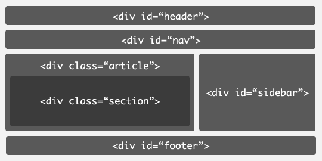
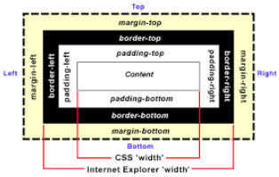
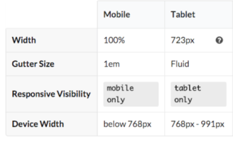
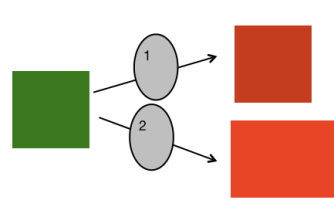

Introducing HTML
The Nature of the Web
HTML Basics
Lab-00
Lab-01
Introducing CSS
HTML Elements
CSS Basics
CSS Rules
CSS Cascade
Lab-02
The Box Model
Classes, IDs & Divs
Box Fundamentals
Box Model Example
Project 1 Specification
Lab-03
Layout
Box Model Example
Multicolumn Layout
The Evolution of the Web
HTML/CSS Style Guide
Lab-04
Navigation
Web Design
Navigation
Lab-05
Semantic HTML + More Layout
CSS Layout
Semantic HTML
Lab-06
Layout + Review
Case Study
CSS Layout
Lab-07-a
Lab-07-b
Deployment
Command Prompt
Deployment
Harp & Surge
Lab-08
Templates
Templates
Project 2 Specification
HTML Tables
Lab-09
Semantic-UI Part I
Project Structure
Semantic-UI I
Semantic-UI II
Semantic-UI III
Lab-10
Semantic-UI Part II
Semantic Part IV
Forms
CSS Futures
Lab-11
Assignments
Project 1 Specification
Project 2 Specification
Web Site Development
All slides's in Module
The Nature of the Web
HTML Basics
HTML Elements
CSS Basics
CSS Rules
CSS Cascade
Classes, IDs & Divs

Box Fundamentals

Box Model Example
Project 1 Specification
Box Model Example
Multicolumn Layout
The Evolution of the Web
HTML/CSS Style Guide
Web Design
Navigation
CSS Layout
Semantic HTML
Case Study
CSS Layout
Command Prompt
Deployment
Harp & Surge
Templates
Project 2 Specification
HTML Tables
Project Structure
Semantic-UI I

Semantic-UI II
Semantic-UI III
Semantic Part IV
Forms
CSS Futures

Project 1 Specification
Project 2 Specification